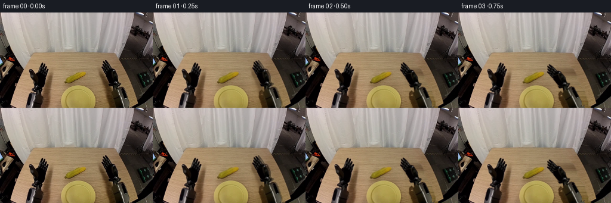
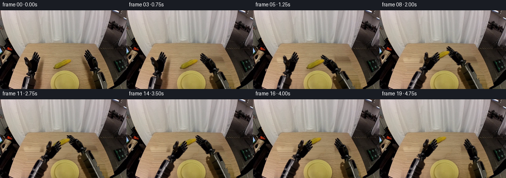

CODING AGENTS AS PIXEL WORLD MODELS
traex/GPT-6.1-Sol · common50_0040
点击播放 · 原生 RGB 像素
逐轮保存的候选
回放视频、检查图与代码变化。
每份候选均可单独播放。实际图片检查记录在下方工具轨迹中。
候选 01播放与检查图
点击播放 · 原生 RGB 像素


展开代码变化
--- 上一保存版本
+++ 本次保存版本
@@ -0,0 +1,194 @@
+from pathlib import Path
+import math
+import numpy as np
+from PIL import Image, ImageDraw, ImageFilter
+import artifact_io
+
+ROOT=Path(__file__).resolve().parent
+IM=np.array(Image.open(ROOT/'first_frame.png').convert('RGB'))
+H,W=160,256
+
+def polygon(points, height=H):
+ m=Image.new('L',(W,height));ImageDraw.Draw(m).polygon(points,fill=255)
+ return np.asarray(m).astype(float)/255
+
+def dilate(m,n=3):
+ return np.asarray(Image.fromarray((m*255).astype('uint8')).filter(ImageFilter.MaxFilter(n))).astype(float)/255
+
+def soften(m,r=.35):
+ return np.asarray(Image.fromarray((np.clip(m,0,1)*255).astype('uint8')).filter(ImageFilter.GaussianBlur(r))).astype(float)/255
+
+rgb=IM.astype(float);r,g,b=rgb.transpose(2,0,1)
+neutral=((np.maximum.reduce([r,g,b])-np.minimum.reduce([r,g,b]))<35)
+material=neutral | (np.maximum.reduce([r,g,b])<78)
+left_roi=polygon([(68,81),(81,82),(86,100),(80,123),(76,133),(85,160),(41,160),(47,134),(55,127),(53,114),(48,108),(46,94),(55,92),(62,101),(64,91)])
+right_roi=polygon([(173,77),(181,78),(188,87),(195,92),(200,96),(202,110),(208,118),(211,123),(204,125),(214,131),(220,160),(179,160),(175,135),(187,127),(182,120),(178,108),(170,101),(166,94),(168,85)])
+LM=(left_roi*material).astype(float)
+RM=(right_roi*material).astype(float)
+# The corn silhouette includes the dark underside, not its table shadow.
+CM=polygon([(138,98),(143,99),(145,101),(145,104),(141,108),(137,110),(132,112),(128,115),(122,117),(118,119),(111,119),(108,117),(108,114),(110,109),(115,105),(122,103),(129,99)])
+# Fine edge opacity inferred from contrast with surrounding warm wood.
+yy,xx=np.indices((H,W))
+basecorn=np.empty_like(rgb)
+for y in range(H):
+ a=np.median(rgb[y,99:107],axis=0);z=np.median(rgb[y,147:156],axis=0)
+ basecorn[y]=a[None]+(z-a)[None]*((np.arange(W)-103)/48)[:,None]
+# Retain the ear's intrinsic kernel texture while excluding warm background pixels.
+corn_strength=np.clip(((g-b)-32)/22,0,1)
+CM*=np.maximum(corn_strength, ((r<133)&(g<109)&(b<64)).astype(float)*.98)
+CM=soften(CM,.28)
+
+# Reconstruct only exposed wood under the moving robot silhouettes.
+wood=rgb.copy()
+for y in range(H):
+ a=np.median(rgb[y,89:102],axis=0)
+ z=np.median(rgb[y,162:170],axis=0)
+ ramp=a[None]+(z-a)[None]*((np.arange(W)-95)/70)[:,None]
+ # Grain is sampled from the same row of the original tabletop.
+ grain=rgb[y,90+(np.arange(W)%10)]-np.mean(rgb[y,90:100],axis=0)
+ wood[y]=np.clip(ramp+.60*grain,0,255)
+left_shadow=polygon([(79,106),(88,107),(88,160),(71,160),(73,132)])
+right_shadow=polygon([(167,98),(174,100),(186,125),(194,160),(176,160),(168,120)])
+Lremove=soften(np.maximum(dilate(LM,3),left_shadow),.7)
+Rremove=soften(np.maximum(dilate(RM,3),right_shadow),.7)
+Cremove=soften(np.maximum(dilate(CM,3),polygon([(109,116),(121,116),(133,115),(126,121),(113,121)])),.65)
+
+# Upper hand and distal rigid forearm layers; each keeps its original proportions.
+# Joining them at overlapping wrist collars avoids gaps during articulation.
+LMupper=LM*(yy<=134)
+RMupper=RM*(yy<=129)
+LMlower=LM*(yy>=129)
+RMlower=RM*(yy>=124)
+
+# Extend the original forearms below the image with their existing rigid cross-section.
+EH=240
+
+def extended(mask, side):
+ tex=np.zeros((EH,W,3),float);tex[:H]=rgb
+ al=np.zeros((EH,W),float);al[:H]=mask
+ slope=-.17 if side=='left' else .32
+ for y in range(H,EH):
+ src_y=148+(y-H)%10
+ offset=slope*(y-src_y)
+ xs=np.clip(np.arange(W)-offset,0,W-1)
+ lo=np.floor(xs).astype(int);hi=np.minimum(lo+1,W-1);f=xs-lo
+ tex[y]=rgb[src_y,lo]*(1-f[:,None])+rgb[src_y,hi]*f[:,None]
+ al[y]=mask[src_y,lo]*(1-f)+mask[src_y,hi]*f
+ return tex,soften(al,.30)
+
+Ltex,Llow=extended(LMlower,'left');Rtex,Rlow=extended(RMlower,'right')
+Lup=soften(LMupper,.28);Rup=soften(RMupper,.28)
+# Separate articulated digit groups, with rigid rotations about knuckle hinges.
+Lthumb=polygon([(46,92),(54,92),(63,105),(63,112),(53,112),(47,103)])*Lup
+Lfingers=polygon([(65,79),(86,79),(86,103),(66,103)])*Lup
+Rdigits=polygon([(165,76),(185,76),(194,95),(194,100),(174,99),(165,93)])*Rup
+Lcore=np.maximum(0,Lup-np.maximum(Lthumb,Lfingers))
+Rcore=np.maximum(0,Rup-Rdigits)
+
+S=2
+Y,X=np.indices((H*S,W*S));P=np.stack([(X+.5)/S-.5,(Y+.5)/S-.5],-1)
+
+def rot(a):
+ a=math.radians(a);return np.array([[math.cos(a),-math.sin(a)],[math.sin(a),math.cos(a)]])
+
+def over(canvas,texture,alpha,A=None,t=None):
+ A=np.eye(2) if A is None else A;t=np.zeros(2) if t is None else np.array(t)
+ q=(P-t)@np.linalg.inv(A).T
+ sx,sy=q[...,0],q[...,1]
+ x0=np.floor(sx).astype(int);y0=np.floor(sy).astype(int);fx=sx-x0;fy=sy-y0
+ prem=np.zeros_like(canvas);aa=np.zeros(canvas.shape[:2])
+ hh,ww=alpha.shape
+ for dx,dy,w in [(0,0,(1-fx)*(1-fy)),(1,0,fx*(1-fy)),(0,1,(1-fx)*fy),(1,1,fx*fy)]:
+ x=x0+dx;y=y0+dy;v=(x>=0)&(x<ww)&(y>=0)&(y<hh)
+ x=np.clip(x,0,ww-1);y=np.clip(y,0,hh-1)
+ a=alpha[y,x]*w*v
+ aa+=a;prem+=texture[y,x]*a[...,None]
+ return canvas*(1-aa[...,None])+prem
+
+
+def smooth(t):
+ t=np.clip(t,0,1);return t*t*(3-2*t)
+
+def lerp(a,b,t):return np.array(a)*(1-t)+np.array(b)*t
+
+Lanchor=np.array([65.,99.]);Ranchor=np.array([175.,92.])
+Lwrist=np.array([65.,131.]);Rwrist=np.array([195.,126.])
+# Control paths specify fingertip contact, rather than deforming the hands.
+def pose(i):
+ reach=smooth(i/5)
+ lift=smooth((i-5)/4)
+ receive=smooth((i-3)/6)
+ release=smooth((i-11)/3)
+ depart=smooth((i-13)/4)
+ carried=smooth((i-14)/4)
+ rc=lerp(Ranchor,[142,103],reach)
+ rc=rc+np.array([-3,-20])*lift
+ ra=-22*reach
+ rc=lerp(rc,Ranchor,depart);ra*=1-depart
+ lc=lerp(Lanchor,[109,95],receive)
+ lc+=np.array([-6,-4])*carried
+ la=30*receive
+ # Corn remains at rest until the right fingers establish contact.
+ cc=np.array([125.5,109.]) + np.array([-3,-20])*lift +np.array([-6,-4])*carried
+ lclose=smooth((i-9)/3)
+ rclose=smooth((i-4)/2)*(1-release)
+ return lc,la,rc,ra,cc,lclose,rclose,receive,reach,release
+
+
+def hand(canvas,side,contact,angle,close):
+ left=side=='left';anchor=Lanchor if left else Ranchor
+ wrist=Lwrist if left else Rwrist
+ R=rot(angle);translation=np.array(contact)-R@anchor
+ target=R@wrist+translation
+ # A separately rigid lower link remains connected at the rotating wrist joint.
+ hiddenbase=np.array([56.,206.]) if left else np.array([218.,207.])
+ original_vector=hiddenbase-wrist;new_vector=hiddenbase-target
+ lowangle=math.degrees(math.atan2(new_vector[1],new_vector[0])-math.atan2(original_vector[1],original_vector[0]))
+ LR=rot(lowangle);lt=target-LR@wrist
+ canvas=over(canvas,Ltex if left else Rtex,Llow if left else Rlow,LR,lt)
+ core=Lcore if left else Rcore
+ canvas=over(canvas,rgb,core,R,translation)
+ def digit(canvas,mask,pivot,da):
+ D=rot(da);pivot=np.array(pivot)
+ return over(canvas,rgb,mask,R@D,translation+R@(pivot-D@pivot))
+ if left:
+ canvas=digit(canvas,Lfingers,[74,105],-9*close)
+ canvas=digit(canvas,Lthumb,[59,109],18*close)
+ else:
+ canvas=digit(canvas,Rdigits,[182,100],7*close)
+ return canvas
+
+frames=[IM.copy()]
+for i in range(1,20):
+ lc,la,rc,ra,cc,lclose,rclose,receive,reach,release=pose(i)
+ # Locally remove the original contact shadows as each hand travels away.
+ bg=rgb.copy()
+ lm=Lremove*min(1,receive*5);rm=Rremove*min(1,reach*5)
+ bg=bg*(1-lm[...,None])+wood*lm[...,None]
+ bg=bg*(1-rm[...,None])+wood*rm[...,None]
+ cm=Cremove*min(1,np.linalg.norm(cc-[125.5,109.])/2)
+ bg=bg*(1-cm[...,None])+basecorn*cm[...,None]
+ canvas=np.array(Image.fromarray(np.uint8(np.clip(bg,0,255))).resize((W*S,H*S),Image.Resampling.BICUBIC)).astype(float)
+ # The raised ear casts a soft, subdued tabletop shadow.
+ lifting=smooth((i-5)/4)
+ if lifting>0:
+ sy=118+4*lifting;sx=cc[0]+2
+ shadow=np.exp(-((P[...,0]-sx)/16)**2-((P[...,1]-sy)/3.5)**2)*.065*lifting
+ canvas*=1-shadow[...,None]
+ # Fingers surround the two ends of the same textured rigid ear.
+ canvas=hand(canvas,'right',rc,ra,rclose)
+ canvas=over(canvas,rgb,CM,t=cc-[125.5,109.])
+ canvas=hand(canvas,'left',lc,la,lclose)
+ frame=np.array(Image.fromarray(np.uint8(np.clip(canvas,0,255))).resize((W,H),Image.Resampling.LANCZOS))
+ # Maintain fixed wall, tabletop, plate and side robot housings outside action regions.
+ # Antialiasing is confined to the local moving objects rather than the full shot.
+ # Far static pixels can therefore be copied exactly from the source photograph.
+ keep=(yy<73)|((xx<40)&(yy>=75))|((xx>237)&(yy<146))
+ frame[keep]=IM[keep]
+ frames.append(frame)
+
+frames=np.asarray(frames,dtype=np.uint8)
+artifact_io.save(frames,ROOT)
+np.savez_compressed(ROOT/'intermediate_masks.npz',left=LM,right=RM,corn=CM)
+Image.fromarray(np.uint8(np.stack([LM,RM,CM],axis=-1)*255)).save(ROOT/'segmentation.png')
+print('saved',frames.shape,'frame0 identical',np.array_equal(frames[0],IM))
候选 02播放与检查图
点击播放 · 原生 RGB 像素

展开代码变化
--- 上一保存版本
+++ 本次保存版本
@@ -169,6 +169,12 @@
cm=Cremove*min(1,np.linalg.norm(cc-[125.5,109.])/2)
bg=bg*(1-cm[...,None])+basecorn*cm[...,None]
canvas=np.array(Image.fromarray(np.uint8(np.clip(bg,0,255))).resize((W*S,H*S),Image.Resampling.BICUBIC)).astype(float)
+ pristine=canvas.copy()
+ # Soft contact shadows travel with the end effectors rather than staying
+ # behind in the original grasp locations.
+ for cp,activity in [(lc,receive),(rc,reach)]:
+ sh=np.exp(-((P[...,0]-cp[0]-10)/8)**2-((P[...,1]-cp[1]-30)/19)**2)*.07*activity
+ canvas*=1-sh[...,None]
# The raised ear casts a soft, subdued tabletop shadow.
lifting=smooth((i-5)/4)
if lifting>0:
@@ -179,7 +185,11 @@
canvas=hand(canvas,'right',rc,ra,rclose)
canvas=over(canvas,rgb,CM,t=cc-[125.5,109.])
canvas=hand(canvas,'left',lc,la,lclose)
- frame=np.array(Image.fromarray(np.uint8(np.clip(canvas,0,255))).resize((W,H),Image.Resampling.LANCZOS))
+ # Downsample only the rendered increment, keeping the untouched photograph
+ # pixel-exact, including the plate's texture and the vertical wall grain.
+ delta=canvas-pristine
+ small=np.stack([np.asarray(Image.fromarray(delta[...,c].astype('float32')).resize((W,H),Image.Resampling.LANCZOS)) for c in range(3)],axis=-1)
+ frame=np.uint8(np.clip(np.rint(bg+small),0,255))
# Maintain fixed wall, tabletop, plate and side robot housings outside action regions.
# Antialiasing is confined to the local moving objects rather than the full shot.
# Far static pixels can therefore be copied exactly from the source photograph.
候选 03播放与检查图
可观测工具轨迹
实际执行的命令与返回图片。
命令 1exit 0
/bin/bash -lc 'ls -la; cat prompt.txt; cat GENERATION_RULES.md'
命令 2exit 0
/bin/bash -lc "cat task_spec.json; cat artifact_io.py; python - <<'PY'
from PIL import Image
import numpy as np
im=np.array(Image.open('first_frame.png')); print(im.shape)
# palette averages in small tiles, ASCII by color and luminance
for y in range(0,160,4):
line=''
for x in range(0,256,4):
r,g,b=im[y:y+4,x:x+4].mean((0,1))
if r>140 and g>115 and b<g*.72: c='Y'
elif r>g*1.25 and r>b*1.35: c='W'
elif max(r,g,b)-min(r,g,b)<18:
c='@' if r<30 else '#' if r<65 else 'o' if r<110 else '+' if r<155 else '.' if r<205 else ' '
elif b>r*1.2:c='B'
elif r>g and g>b:c='w'
else:c='?'
line+=c
print(f'{y:3} '+line)
PY"命令 3exit 0
/bin/bash -lc "python - <<'PY'
from PIL import Image
import numpy as np
im=np.array(Image.open('first_frame.png'))
for y in range(0,160,8):
print(y,' '.join('%3d,%3d,%3d'%tuple(im[y,x]) for x in range(0,256,8)))
PY"命令 4exit 0
/bin/bash -lc "python - <<'PY'
import numpy as np
from PIL import Image
from scipy.ndimage import label,find_objects
im=np.array(Image.open('first_frame.png')).astype(float);r,g,b=im.transpose(2,0,1)
m=(g-b>45)&(r-b>50)&(r-g<45)
l,n=label(m)
for k,s in enumerate(find_objects(l)):
if s is not None:
area=(l[s]==k+1).sum()
if area>5:print(area,s)
chars='0123456789ABCDEFGHIJKLMNOPQRSTUVWXYZ'
for y in range(84,135):
line=''
for x in range(48,216):
rr,gg,bb=im[y,x]
if m[y,x]: c='Y'
elif max(rr,gg,bb)<25:c='@'
elif max(rr,gg,bb)<65:c='#'
elif max(rr,gg,bb)<115:c='o'
elif max(rr,gg,bb)-min(rr,gg,bb)<20:c='+'
else:c='.'
line+=c
print('%3d '%y+line)
PY"命令 5exit 0
/bin/bash -lc "python - <<'PY'
import numpy as np
from PIL import Image
im=np.array(Image.open('first_frame.png')).astype(float)
for y in range(68,160,2):
m=im[y].max(-1)<110
a=np.flatnonzero(np.diff(np.r_[0,m,0])); spans=[(a[i],a[i+1]-1) for i in range(0,len(a),2) if a[i+1]-a[i]>1]
print(y, spans)
print('corn crop at actual px dark/shade/hue')
for y in range(94,123):
print('%3d '%y+''.join('Y' if p[1]-p[2]>45 and p[0]-p[1]<45 else '@' if max(p)<25 else '#' if max(p)<75 else 's' if max(p)<130 else '.' for p in im[y,95:158]))
PY"命令 6exit 0
/bin/bash -lc "python - <<'PY'
import numpy as np
from PIL import Image
im=np.array(Image.open('first_frame.png')).astype(float)
for y in range(80,160):
s=''
for x in range(160,240):
r,g,b=im[y,x]
if g-b>35 and r-b>70: c='Y' if g-b>50 else 'y'
elif max(r,g,b)<25:c='@'
elif max(r,g,b)<65:c='#'
elif max(r,g,b)<115:c='o'
elif max(r,g,b)-min(r,g,b)<20:c='+'
else:c='.'
s+=c
print('%3d '%y+s)
print('region rgb')
for y in range(96,160,4):print(y,' '.join('%3d,%3d,%3d'%tuple(im[y,x].astype(int)) for x in range(196,228,2)))
PY"命令 7exit 0
/bin/bash -lc "python - <<'PY'
from PIL import Image
import numpy as np
im=np.array(Image.open('first_frame.png')).astype(int)
for y in range(120,160):
print(f'{y:3} '+''.join('@' if max(p)<25 else '#' if max(p)<65 else 'o' if max(p)<110 else '+' if max(p)-min(p)<25 else 's' if max(p)<140 else '.' for p in im[y,40:90]))
print('corn')
for y in range(99,119,2):print(y,[(x,tuple(im[y,x])) for x in range(106,146,3)])
PY"命令 8exit 0
/bin/bash -lc "python - <<'PY'
from PIL import Image
import numpy as np
im=np.array(Image.open('first_frame.png')).astype(int)
for y in range(77,139):
print('%3d '%y+''.join('@' if max(p)<22 else '#' if max(p)<60 else 'o' if max(p)<110 else '+' if max(p)-min(p)<25 else '.' for p in im[y,45:87]))
PY"命令 9exit 0
/bin/bash -lc "cat > generate.py <<'PY'
from pathlib import Path
import math
import numpy as np
from PIL import Image, ImageDraw, ImageFilter
import artifact_io
ROOT=Path(__file__).resolve().parent
IM=np.array(Image.open(ROOT/'first_frame.png').convert('RGB'))
H,W=160,256
def polygon(points, height=H):
m=Image.new('L',(W,height));ImageDraw.Draw(m).polygon(points,fill=255)
return np.asarray(m).astype(float)/255
def dilate(m,n=3):
return np.asarray(Image.fromarray((m*255).astype('uint8')).filter(ImageFilter.MaxFilter(n))).astype(float)/255
def soften(m,r=.35):
return np.asarray(Image.fromarray((np.clip(m,0,1)*255).astype('uint8')).filter(ImageFilter.GaussianBlur(r))).astype(float)/255
rgb=IM.astype(float);r,g,b=rgb.transpose(2,0,1)
neutral=((np.maximum.reduce([r,g,b])-np.minimum.reduce([r,g,b]))<35)
material=neutral | (np.maximum.reduce([r,g,b])<78)
left_roi=polygon([(68,81),(81,82),(86,100),(80,123),(76,133),(85,160),(41,160),(47,134),(55,127),(53,114),(48,108),(46,94),(55,92),(62,101),(64,91)])
right_roi=polygon([(173,77),(181,78),(188,87),(195,92),(200,96),(202,110),(208,118),(211,123),(204,125),(214,131),(220,160),(179,160),(175,135),(187,127),(182,120),(178,108),(170,101),(166,94),(168,85)])
LM=(left_roi*material).astype(float)
RM=(right_roi*material).astype(float)
# The corn silhouette includes the dark underside, not its table shadow.
CM=polygon([(138,98),(143,99),(145,101),(145,104),(141,108),(137,110),(132,112),(128,115),(122,117),(118,119),(111,119),(108,117),(108,114),(110,109),(115,105),(122,103),(129,99)])
# Fine edge opacity inferred from contrast with surrounding warm wood.
yy,xx=np.indices((H,W))
basecorn=np.empty_like(rgb)
for y in range(H):
a=np.median(rgb[y,99:107],axis=0);z=np.median(rgb[y,147:156],axis=0)
basecorn[y]=a[None]+(z-a)[None]*((np.arange(W)-103)/48)[:,None]
# Retain the ear's intrinsic kernel texture while excluding warm background pixels.
corn_strength=np.clip(((g-b)-32)/22,0,1)
CM*=np.maximum(corn_strength, ((r<133)&(g<109)&(b<64)).astype(float)*.98)
CM=soften(CM,.28)
# Reconstruct only exposed wood under the moving robot silhouettes.
wood=rgb.copy()
for y in range(H):
a=np.median(rgb[y,89:102],axis=0)
z=np.median(rgb[y,162:170],axis=0)
ramp=a[None]+(z-a)[None]*((np.arange(W)-95)/70)[:,None]
# Grain is sampled from the same row of the original tabletop.
grain=rgb[y,90+(np.arange(W)%10)]-np.mean(rgb[y,90:100],axis=0)
wood[y]=np.clip(ramp+.60*grain,0,255)
left_shadow=polygon([(79,106),(88,107),(88,160),(71,160),(73,132)])
right_shadow=polygon([(167,98),(174,100),(186,125),(194,160),(176,160),(168,120)])
Lremove=soften(np.maximum(dilate(LM,3),left_shadow),.7)
Rremove=soften(np.maximum(dilate(RM,3),right_shadow),.7)
Cremove=soften(np.maximum(dilate(CM,3),polygon([(109,116),(121,116),(133,115),(126,121),(113,121)])),.65)
# Upper hand and distal rigid forearm layers; each keeps its original proportions.
# Joining them at overlapping wrist collars avoids gaps during articulation.
LMupper=LM*(yy<=134)
RMupper=RM*(yy<=129)
LMlower=LM*(yy>=129)
RMlower=RM*(yy>=124)
# Extend the original forearms below the image with their existing rigid cross-section.
EH=240
def extended(mask, side):
tex=np.zeros((EH,W,3),float);tex[:H]=rgb
al=np.zeros((EH,W),float);al[:H]=mask
slope=-.17 if side=='left' else .32
for y in range(H,EH):
src_y=148+(y-H)%10
offset=slope*(y-src_y)
xs=np.clip(np.arange(W)-offset,0,W-1)
lo=np.floor(xs).astype(int);hi=np.minimum(lo+1,W-1);f=xs-lo
tex[y]=rgb[src_y,lo]*(1-f[:,None])+rgb[src_y,hi]*f[:,None]
al[y]=mask[src_y,lo]*(1-f)+mask[src_y,hi]*f
return tex,soften(al,.30)
Ltex,Llow=extended(LMlower,'left');Rtex,Rlow=extended(RMlower,'right')
Lup=soften(LMupper,.28);Rup=soften(RMupper,.28)
# Separate articulated digit groups, with rigid rotations about knuckle hinges.
Lthumb=polygon([(46,92),(54,92),(63,105),(63,112),(53,112),(47,103)])*Lup
Lfingers=polygon([(65,79),(86,79),(86,103),(66,103)])*Lup
Rdigits=polygon([(165,76),(185,76),(194,95),(194,100),(174,99),(165,93)])*Rup
Lcore=np.maximum(0,Lup-np.maximum(Lthumb,Lfingers))
Rcore=np.maximum(0,Rup-Rdigits)
S=2
Y,X=np.indices((H*S,W*S));P=np.stack([(X+.5)/S-.5,(Y+.5)/S-.5],-1)
def rot(a):
a=math.radians(a);return np.array([[math.cos(a),-math.sin(a)],[math.sin(a),math.cos(a)]])
def over(canvas,texture,alpha,A=None,t=None):
A=np.eye(2) if A is None else A;t=np.zeros(2) if t is None else np.array(t)
q=(P-t)@np.linalg.inv(A).T
sx,sy=q[...,0],q[...,1]
x0=np.floor(sx).astype(int);y0=np.floor(sy).astype(int);fx=sx-x0;fy=sy-y0
prem=np.zeros_like(canvas);aa=np.zeros(canvas.shape[:2])
hh,ww=alpha.shape
for dx,dy,w in [(0,0,(1-fx)*(1-fy)),(1,0,fx*(1-fy)),(0,1,(1-fx)*fy),(1,1,fx*fy)]:
x=x0+dx;y=y0+dy;v=(x>=0)&(x<ww)&(y>=0)&(y<hh)
x=np.clip(x,0,ww-1);y=np.clip(y,0,hh-1)
a=alpha[y,x]*w*v
aa+=a;prem+=texture[y,x]*a[...,None]
return canvas*(1-aa[...,None])+prem
def smooth(t):
t=np.clip(t,0,1);return t*t*(3-2*t)
def lerp(a,b,t):return np.array(a)*(1-t)+np.array(b)*t
Lanchor=np.array([65.,99.]);Ranchor=np.array([175.,92.])
Lwrist=np.array([65.,131.]);Rwrist=np.array([195.,126.])
# Control paths specify fingertip contact, rather than deforming the hands.
def pose(i):
reach=smooth(i/5)
lift=smooth((i-5)/4)
receive=smooth((i-3)/6)
release=smooth((i-11)/3)
depart=smooth((i-13)/4)
carried=smooth((i-14)/4)
rc=lerp(Ranchor,[142,103],reach)
rc=rc+np.array([-3,-20])*lift
ra=-22*reach
rc=lerp(rc,Ranchor,depart);ra*=1-depart
lc=lerp(Lanchor,[109,95],receive)
lc+=np.array([-6,-4])*carried
la=30*receive
# Corn remains at rest until the right fingers establish contact.
cc=np.array([125.5,109.]) + np.array([-3,-20])*lift +np.array([-6,-4])*carried
lclose=smooth((i-9)/3)
rclose=smooth((i-4)/2)*(1-release)
return lc,la,rc,ra,cc,lclose,rclose,receive,reach,release
def hand(canvas,side,contact,angle,close):
left=side=='left';anchor=Lanchor if left else Ranchor
wrist=Lwrist if left else Rwrist
R=rot(angle);translation=np.array(contact)-R@anchor
target=R@wrist+translation
# A separately rigid lower link remains connected at the rotating wrist joint.
hiddenbase=np.array([56.,206.]) if left else np.array([218.,207.])
original_vector=hiddenbase-wrist;new_vector=hiddenbase-target
lowangle=math.degrees(math.atan2(new_vector[1],new_vector[0])-math.atan2(original_vector[1],original_vector[0]))
LR=rot(lowangle);lt=target-LR@wrist
canvas=over(canvas,Ltex if left else Rtex,Llow if left else Rlow,LR,lt)
core=Lcore if left else Rcore
canvas=over(canvas,rgb,core,R,translation)
def digit(canvas,mask,pivot,da):
D=rot(da);pivot=np.array(pivot)
return over(canvas,rgb,mask,R@D,translation+R@(pivot-D@pivot))
if left:
canvas=digit(canvas,Lfingers,[74,105],-9*close)
canvas=digit(canvas,Lthumb,[59,109],18*close)
else:
canvas=digit(canvas,Rdigits,[182,100],7*close)
return canvas
frames=[IM.copy()]
for i in range(1,20):
lc,la,rc,ra,cc,lclose,rclose,receive,reach,release=pose(i)
# Locally remove the original contact shadows as each hand travels away.
bg=rgb.copy()
lm=Lremove*min(1,receive*5);rm=Rremove*min(1,reach*5)
bg=bg*(1-lm[...,None])+wood*lm[...,None]
bg=bg*(1-rm[...,None])+wood*rm[...,None]
cm=Cremove*min(1,np.linalg.norm(cc-[125.5,109.])/2)
bg=bg*(1-cm[...,None])+basecorn*cm[...,None]
canvas=np.array(Image.fromarray(np.uint8(np.clip(bg,0,255))).resize((W*S,H*S),Image.Resampling.BICUBIC)).astype(float)
# The raised ear casts a soft, subdued tabletop shadow.
lifting=smooth((i-5)/4)
if lifting>0:
sy=118+4*lifting;sx=cc[0]+2
shadow=np.exp(-((P[...,0]-sx)/16)**2-((P[...,1]-sy)/3.5)**2)*.065*lifting
canvas*=1-shadow[...,None]
# Fingers surround the two ends of the same textured rigid ear.
canvas=hand(canvas,'right',rc,ra,rclose)
canvas=over(canvas,rgb,CM,t=cc-[125.5,109.])
canvas=hand(canvas,'left',lc,la,lclose)
frame=np.array(Image.fromarray(np.uint8(np.clip(canvas,0,255))).resize((W,H),Image.Resampling.LANCZOS))
# Maintain fixed wall, tabletop, plate and side robot housings outside action regions.
# Antialiasing is confined to the local moving objects rather than the full shot.
# Far static pixels can therefore be copied exactly from the source photograph.
keep=(yy<73)|((xx<40)&(yy>=75))|((xx>237)&(yy<146))
frame[keep]=IM[keep]
frames.append(frame)
frames=np.asarray(frames,dtype=np.uint8)
artifact_io.save(frames,ROOT)
np.savez_compressed(ROOT/'intermediate_masks.npz',left=LM,right=RM,corn=CM)
Image.fromarray(np.uint8(np.stack([LM,RM,CM],axis=-1)*255)).save(ROOT/'segmentation.png')
print('saved',frames.shape,'frame0 identical',np.array_equal(frames[0],IM))
PY
python generate.py"命令 10exit 0
/bin/bash -lc "python - <<'PY'
import numpy as np
from PIL import Image
for k in [0,5,9,12,16,19]:
im=np.array(Image.open('frames/%02d.png'%k)).astype(int)
print('\\nFRAME',k)
for y in range(66,143,2):
line=''
for x in range(40,215,2):
p=im[y:y+2,x:x+2].mean((0,1));r,g,b=p
if g-b>50 and r-g<45:c='Y'
elif max(p)<25:c='@'
elif max(p)<60:c='#'
elif max(p)<110:c='o'
elif max(p)-min(p)<22:c='+'
else:c='.'
line+=c
print('%3d '%y+line)
m=np.load('intermediate_masks.npz');print({k:float(m[k].sum()) for k in m.files})
PY"命令 11exit 0
/bin/bash -lc "python generate.py; python - <<'PY'
from PIL import Image
import numpy as np
from scipy.ndimage import label,find_objects
from pathlib import Path
f=np.stack([np.array(Image.open(p)) for p in sorted(Path('frames').glob('*.png'))]);src=np.array(Image.open('first_frame.png'))
assert f.shape==(20,160,256,3) and f.dtype==np.uint8
assert np.array_equal(f[0],src)
print('Mean consecutive RGB deltas:',np.round(np.abs(np.diff(f.astype(float),axis=0)).mean((1,2,3)),2))
for i in [0,6,9,12,15,19]:
r,g,b=f[i].astype(float).transpose(2,0,1);m=(g-b>50)&(r-g<45)&(np.indices((160,256))[0]<121)
l,n=label(m);objects=find_objects(l);comps=[]
for k,s in enumerate(objects):
if s is not None:
n=(l[s]==k+1).sum()
if n>30:comps.append((int(n),[(z.start,z.stop) for z in s]))
print('Frame',i,'corn components',comps)
print('Outputs:',Path('pixels.npz').stat().st_size,'bytes; 20 RGB PNGs; index.html')
PY"保存候选 3 份；完成命令 11 次；可验证图片返回 0 张。原始 API 响应与完整日志保留在本地。